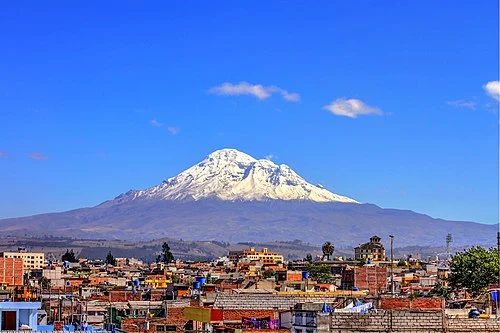

Discover Riobamba
History of Riobamba
Riobamba known as the Sultana of the Andes was founded in 1534 by the conquistador Diego de Almagro which was known as the first city in Ecuador among the most important events in the city of Riobamba was the first city to establish its capital in Ecuador on April 21, 1822 a group of Riobamba patriots led by General Jose Maria Vazquez de Noboa rebelled against Spanish rule its culture has impressed many by the majestic volcano of the Andes, Chimborazo who is the largest in South America and the highest in the Andes its majestic city known for its traditions, its gastronomy and its exemplary work effort Riobamba has many urban legends and stories of interesting places the Riobamba Cathedral and the Church of La Concepción are examples of colonial architecture for that reason Riobamba is one of the first cities to visit by tourists
Current Demographics
- Inhabitants in the city:177,213 inhabitants
- Population Density [2022]:3,052/km²
- Average annual income :$40.85
- Median house Value:USD $110,00
Upcoming Events
- Civic Parade for the Riobamba festivities April 18th, celebrations for the Battle of Tarqui
- Expo Fair Quinta Macaji - Expofair from April 15 to 24
- Parade of Joy April 21st
Discover the best Places in the Riobamba
Catedral the conception
streets Orozco s/n y Colónse
The conception, known for its very old structure, was created in 1975 by a group of Catholic religious groups, which maintains a culture of one of the churches of civilizations.
learn morePark Maldonado
89G2+WM8, 5 de Junio, Riobamba
Maldonado Park, one of the oldest parks in the city of Riobamba, was created in commemoration of one of the most prominent figures of the city of Riobamba, Pedro Vicente Maldonado, who stood out as a scientist, philosopher, mathematician, and physicist. He was also a defender of the political freedom of the city.
learn moreTrain old
avenue Daniel León Borja y Carabobo.
The old train that is located in the center of the city of Riobamba was commemorated in honor of one of the first steam trains that helped to move around in the decade of the 19th century, thus gaining a lot of prestige. It is a place where much history of the train that moved from the cities to the different parts of Ecuador and the cantons of Riobamba is remembered.
learn moreVolcan Chimborazo
kilómetro of the road Riobamba - Guaranda
The Chimborazo volcano being the highest in South America, which is also visited by too many tourists since its attractive mountain ranges attract people to practice different ice sports. 2000 years ago was the last eruption and since then it is considered a snow-capped mountain due to its attractive and splendid white ice that covers it. It is located 10 kilometers from the city of Riobamba.
learn moreDinosarius Tracks Museum
Licto
The Dinosaur Museum, having one of the important stories of ancient civilizations, has become known that animals that have become extinct, such as mammoths and dinosaurs, apparently left their footprints in this place, as is the Chalán Museum, located 30 kilometers from the city of Riobamba, which can be visited by many people who want to know more about this history that leaves many unknowns for those archaeologists who have investigated for years.
learn moreVolcan Altar
Road Riobamba – Penipe – Comunidad The Candelaria;
El Altar Volcano is visited by more than 20,000 tourists a year from different countries due to its splendid history, which has brought many tourists to its attractive lagoons, which make it possible for tourists to visit more often.
lean moreOld city Guano
In front of park, and Los Franciscanos.
The town of Iguaano being one of the oldest towns belonging to the city of Riobamba having a very attractive culture for its museums for its crafts was considered one of the great civilizations of the decade of 1890 having very important events by different historical philosophers and physicists and mathematicians a place that every year is visited by different tourists from around the world and also having an incredible gastronomy for tourists located three kilometers from the city of Riobamba
learn moreLake Blue
the rural parish of Riobamba called Quimiag,
The blue lagoon located between the El Altar volcano is attractive for its transparency and purity that is born from the El Altar volcano, being visited each year by more than 30,000 tourists from different countries and also attractive for photographs that makes tourists fall more in love with its attractive transparency of water and purity located 50 kilometers from the city of Riobamba
learn more